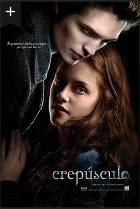

CREPÚSCULO
SINOPSE
Bella é jovem adolescente que se muda para Forks, Washington, para viver com o pai. Assim que chega ao local, fica sabendo de uma misteriosa família que habita a cidade. Acaba, por acidente, conhecendo um dos cinco irmãos, Edward, e aos poucos vai descobrindo alguns segredos. O mais importante é que são todos vampiros.